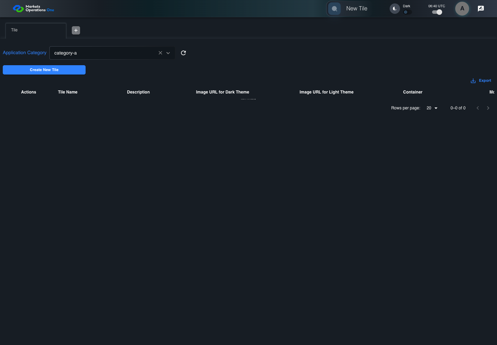
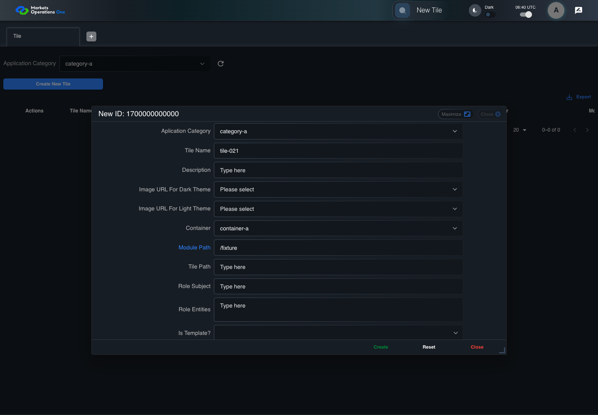
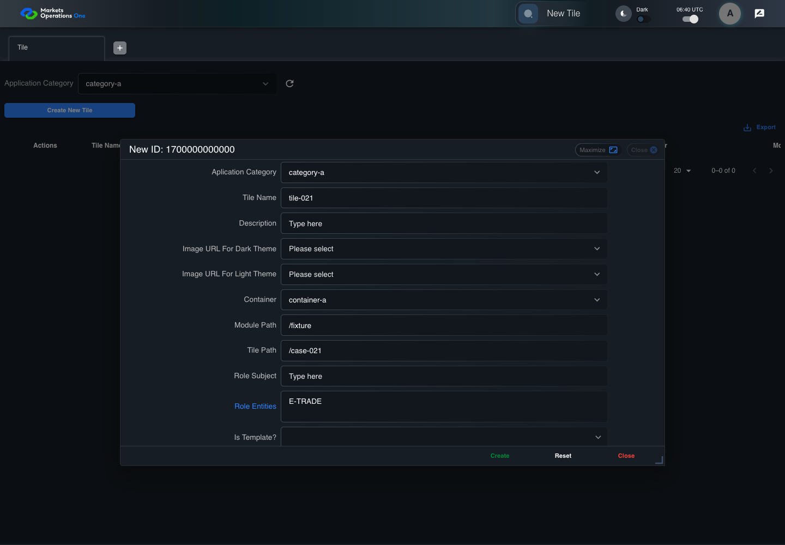
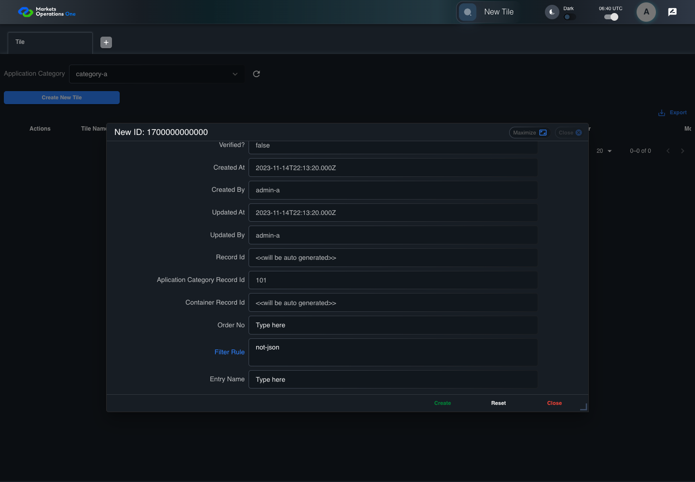

BFF-ADM-021 current BFF administration through actual UI
PASS · application/run-072/bff-adm-021-current-bff-administration-through-actual-ui-613161d22bb5-attempt-1 · ACTUAL_APPLICATION_LOCAL_SERVICES
Actual current React and exact-current BFF admin controllers/services/JPA with actual migration DDL in disposable PostgreSQL. Controlled OUD/EMS2 identities and local Spring bootstrap. Fixture SQL seeds/mutates isolated records; service errors are actual database errors. Undefined agreed messages remain unresolved acceptance.
2026-10-22T06:40:25.491Z to 2026-10-22T06:40:34.157Z
Assertions and result · Artifact manifest · Exact run inputs and source hashes
Result SHA-256:10e087c8f9b90d39541b389d8915749d6c93b524a4fff279718079e26746f3ebMachine observations
- actual-identity-projection.json
d4434c19f8bdc00671eb7ad39e6bbcbeb1ad8f6855a8d248dd05a2a2590c4665 - baseline-inputs.json
a035a9cf4c6257f83eb8abc434b1d80b760f7d61a98430064d574a6b3ec0c4dc - bff-boundary.json
961ea783818b3e19f64cdb49274d778ce27e679a33510a856dead826073ab508 - committed-ui-submission-comparisons.json
46c494280ddd540efdd777bec4f383610d8caf929222029225961168a41a0bc5 - creation-clock.json
293f17cf1027546decedff45830b5cb8754a72bf015a607e5acf5d66ed49d7c9 - fixture-step-10.json
5d72e71b1924395e58452041c8064396ad254bb1591e027c1e6dbae5314c8828 - fixture-step-11.json
36460d0ef9d4749311a00b32dfeeacba010ff400fa773931a77e227e0d1d99de - fixture-step-6.json
d437bf1dc765be2e2b529dc3c92b0879752b6344902a031f278c18795629afd5 - fixture-step-7.json
0019cf91003bcf97fd7f49d11e8c24435a99069aa1b975c04463a4fb740e5952 - fixture-step-8.json
caad9b5748b044a159abd301f2a5a0fe0d7d51e0644976d33c43718e98a8aee2 - fixture-step-9.json
8510cb1ba05caea1f34b662eea4780b7fbdfd4403df1ad863b5ceca6719dd28b - initial-persisted-records.json
6535f1cce159032f384c14dddd1f23ff291baa4d17f168f21f730092c81c841e - persisted-after-submit.json
3b27634281ef3ed0bf5f905456ba9c7cd074d166acc990844d7eccb02f818dff - reference-snapshot-3.json
1d161006876477da1151bfef2a74517bf24e2c33ef5c4807a79c0d6ec30ff97e - reference-snapshot-4.json
f14ce765f13ed420d5141aa837d91144614257d177d85acabbf9c24aeabc5450 - rejection-or-policy-observation.json
58745cef030ccaa4e27497f02e2348d6582d2d136ed72fa8742342ee4d7a917c - ui-origin-bff-requests.json
a91288fbbacb96ef6b99e70e4b302ac3b42ae2991817e1f262b15b2317357abd - undefined-message-contract.json
b1360def857c37ecaf3c69b3b70d5d0ada8f6862c4248c8c332445333bf389a2
Screenshot capture: CAPTURED. Named frames: 25.
Step screenshot evidence: COMPLETE. 24/24 canonical steps have execution screenshots.
Canonical step timeline
Given Admin A uses subject "admin-a" with role "FMO_ADMIN" in an isolated authenticated browser
Execution: PASSED.1. step-01 Visible state after step 1: Given Admin A uses subject "admin-a" with role "FMO_ADMIN" in an isolated authenticated browser
2026-10-22T06:40:28.686Z · 1440×1000
Step: /Users/lushevol/code/github/ratan-release-impact/workbench/tasks/ui-test-coverage-20261022/test-cases.md:15534
SHA-256:747f1f3a55141956f62fdd96d3835012ac77e5380c856a0459aaa45816a45393And the controlled Tile fixture records the initial grid rows and persisted values
Execution: PASSED.
2. step-02 Visible state after step 2: And the controlled Tile fixture records the initial grid rows and persisted values
2026-10-22T06:40:28.895Z · 1440×1000
Step: /Users/lushevol/code/github/ratan-release-impact/workbench/tasks/ui-test-coverage-20261022/test-cases.md:15535
SHA-256:f6fbe917cb124cef8699cb85549ecb86ac9efcee572c12a8995298e65a7200aeAnd Category 101 has label "category-a" and Import Map 201 has Module Name "container-a"
Execution: PASSED.
3. step-03 Visible state after step 3: And Category 101 has label "category-a" and Import Map 201 has Module Name "container-a"
2026-10-22T06:40:28.968Z · 1440×1000
Step: /Users/lushevol/code/github/ratan-release-impact/workbench/tasks/ui-test-coverage-20261022/test-cases.md:15536
SHA-256:bff2fbbb8991f1809a0dc491436c1c3b9b6bf5bb09156bb382105182dcbfe3deAnd both references belong to "FMO_ADMIN" and the Tile page category filter value is Category 101
Execution: PASSED.4. step-04 Visible state after step 4: And both references belong to "FMO_ADMIN" and the Tile page category filter value is Category 101
2026-10-22T06:40:29.066Z · 1440×1000
Step: /Users/lushevol/code/github/ratan-release-impact/workbench/tasks/ui-test-coverage-20261022/test-cases.md:15537
SHA-256:aeccd798f7b1c74721cf035f62d6803748d226e36a6f8e5e74ef910882a6db9cAnd the controlled creation clock returns 1700000000000 milliseconds
Execution: PASSED.
5. step-05 Visible state after step 5: And the controlled creation clock returns 1700000000000 milliseconds
2026-10-22T06:40:29.114Z · 1440×1000
Step: /Users/lushevol/code/github/ratan-release-impact/workbench/tasks/ui-test-coverage-20261022/test-cases.md:15538
SHA-256:aeccd798f7b1c74721cf035f62d6803748d226e36a6f8e5e74ef910882a6db9cAnd the baseline fixture data defines "Tile Name" as "tile-021"
Execution: PASSED.
6. step-06 Visible state after step 6: And the baseline fixture data defines "Tile Name" as "tile-021"
2026-10-22T06:40:29.196Z · 1440×1000
Step: /Users/lushevol/code/github/ratan-release-impact/workbench/tasks/ui-test-coverage-20261022/test-cases.md:15539
SHA-256:cb2f83fd9df6875d821a218c49efe7d37c3406ef3eea1e598689e2d4219f4703And the baseline fixture data defines "Module Path" as "/fixture"
Execution: PASSED.7. step-07 Visible state after step 7: And the baseline fixture data defines "Module Path" as "/fixture"
2026-10-22T06:40:29.259Z · 1440×1000
Step: /Users/lushevol/code/github/ratan-release-impact/workbench/tasks/ui-test-coverage-20261022/test-cases.md:15540
SHA-256:f2ae741beb67793ab3c740a7b011f51f6f0a0d2561c8ef428ab2f04107c6f581And the baseline fixture data defines "Tile Path" as "/case-021"
Execution: PASSED.8. step-08 Visible state after step 8: And the baseline fixture data defines "Tile Path" as "/case-021"
2026-10-22T06:40:29.310Z · 1440×1000
Step: /Users/lushevol/code/github/ratan-release-impact/workbench/tasks/ui-test-coverage-20261022/test-cases.md:15541
SHA-256:14267d4c96e684044c7dd00f74cf37d6429e4f3235ba3ca7d4f27c0979df5fb6And the baseline fixture data defines "Role Entities" as "E-TRADE"
Execution: PASSED.9. step-09 Visible state after step 9: And the baseline fixture data defines "Role Entities" as "E-TRADE"
2026-10-22T06:40:29.360Z · 1440×1000
Step: /Users/lushevol/code/github/ratan-release-impact/workbench/tasks/ui-test-coverage-20261022/test-cases.md:15542
SHA-256:02365b1bb6ad09443f8a82ee6be1125f93fd4c62168329d8e67811d50b97b61eAnd the baseline fixture data defines "Filter Rule" as ""
Execution: PASSED.
10. step-10 Visible state after step 10: And the baseline fixture data defines "Filter Rule" as ""
2026-10-22T06:40:29.410Z · 1440×1000
Step: /Users/lushevol/code/github/ratan-release-impact/workbench/tasks/ui-test-coverage-20261022/test-cases.md:15543
SHA-256:f00aecbef034c8519074a0e27c7a823681038054376cbe1894324a2f864376c0And the baseline Tile references use "Aplication Category" "category-a" and "Container" "container-a"
Execution: PASSED.11. step-11 Visible state after step 11: And the baseline Tile references use "Aplication Category" "category-a" and "Container" "container-a"
2026-10-22T06:40:29.460Z · 1440×1000
Step: /Users/lushevol/code/github/ratan-release-impact/workbench/tasks/ui-test-coverage-20261022/test-cases.md:15544
SHA-256:7b81db55b3071bedd4e581f7ea66df4c2acd585c8476ca5414dc8ef7fbb64804When Admin A clicks the button labeled "Create New Tile" on the Tile administration page
Execution: PASSED.12. step-12 Visible state after step 12: When Admin A clicks the button labeled "Create New Tile" on the Tile administration page
2026-10-22T06:40:29.782Z · 1440×1000
Step: /Users/lushevol/code/github/ratan-release-impact/workbench/tasks/ui-test-coverage-20261022/test-cases.md:15545
SHA-256:4e4d851e2e75246d330ba4c3e683072b9d4be796a8185baaae808be1b0c5632bThen the dialog titled "new ID: 1700000000000" is visible on the Tile administration page
Execution: PASSED.13. step-13 Visible state after step 13: Then the dialog titled "new ID: 1700000000000" is visible on the Tile administration page
2026-10-22T06:40:29.912Z · 1440×1000
Step: /Users/lushevol/code/github/ratan-release-impact/workbench/tasks/ui-test-coverage-20261022/test-cases.md:15546
SHA-256:a07d84a7befd4c0fe227439a672f0380f45b612f784dfd69e4dcf80be92286ffWhen Admin A clicks the combobox labeled "Container" in dialog "new ID: 1700000000000"
Execution: PASSED.14. step-14 Visible state after step 14: When Admin A clicks the combobox labeled "Container" in dialog "new ID: 1700000000000"
2026-10-22T06:40:30.330Z · 1440×1000
Step: /Users/lushevol/code/github/ratan-release-impact/workbench/tasks/ui-test-coverage-20261022/test-cases.md:15547
SHA-256:646d332d9152c7d1aefb86bd8e313ffdabe6f59ed9a09eeb3813ab628cef7059And Admin A clicks the option labeled "container-a" in the expanded "Container" listbox for dialog "new ID: 1700000000000"
Execution: PASSED.
15. step-15 Visible state after step 15: And Admin A clicks the option labeled "container-a" in the expanded "Container" listbox for dialog "new ID: 1700000000000"
2026-10-22T06:40:30.845Z · 1440×1000
Step: /Users/lushevol/code/github/ratan-release-impact/workbench/tasks/ui-test-coverage-20261022/test-cases.md:15548
SHA-256:897d05b39487b50fdd49a347c237dbcc053732fa2f148e8a349934e902b8f7d5And Admin A fills the textbox labeled "Tile Name" with "tile-021" in dialog "new ID: 1700000000000"
Execution: PASSED.16. step-16 Visible state after step 16: And Admin A fills the textbox labeled "Tile Name" with "tile-021" in dialog "new ID: 1700000000000"
2026-10-22T06:40:31.278Z · 1440×1000
Step: /Users/lushevol/code/github/ratan-release-impact/workbench/tasks/ui-test-coverage-20261022/test-cases.md:15549
SHA-256:642d2155dee8f34771d70b59bf577fb52b107c1cfe5c6cd3bdc9cbddc684868cAnd Admin A fills the textbox labeled "Module Path" with "/fixture" in dialog "new ID: 1700000000000"
Execution: PASSED.
17. step-17 Visible state after step 17: And Admin A fills the textbox labeled "Module Path" with "/fixture" in dialog "new ID: 1700000000000"
2026-10-22T06:40:31.714Z · 1440×1000
Step: /Users/lushevol/code/github/ratan-release-impact/workbench/tasks/ui-test-coverage-20261022/test-cases.md:15550
SHA-256:3f65e1631fa87b908e4792ff76f16f005967a3a7248ff16500260332e9a1ebcbAnd Admin A fills the textbox labeled "Tile Path" with "/case-021" in dialog "new ID: 1700000000000"
Execution: PASSED.18. step-18 Visible state after step 18: And Admin A fills the textbox labeled "Tile Path" with "/case-021" in dialog "new ID: 1700000000000"
2026-10-22T06:40:32.141Z · 1440×1000
Step: /Users/lushevol/code/github/ratan-release-impact/workbench/tasks/ui-test-coverage-20261022/test-cases.md:15551
SHA-256:6d0c1145e8438b5eac143288eba766efc49054f964ca82ffcd129d2cdff5b733And Admin A fills the textarea labeled "Role Entities" with "E-TRADE" in dialog "new ID: 1700000000000"
Execution: PASSED.
19. step-19 Visible state after step 19: And Admin A fills the textarea labeled "Role Entities" with "E-TRADE" in dialog "new ID: 1700000000000"
2026-10-22T06:40:32.557Z · 1440×1000
Step: /Users/lushevol/code/github/ratan-release-impact/workbench/tasks/ui-test-coverage-20261022/test-cases.md:15552
SHA-256:eb0a4dcc96e3651eba9b9ac67b3fb3c156c98d51dcd9366fca4714c9a8c85e4fAnd Admin A fills the textarea labeled "Filter Rule" with "not-json" in dialog "new ID: 1700000000000"
Execution: PASSED.
20. step-20 Visible state after step 20: And Admin A fills the textarea labeled "Filter Rule" with "not-json" in dialog "new ID: 1700000000000"
2026-10-22T06:40:32.973Z · 1440×1000
Step: /Users/lushevol/code/github/ratan-release-impact/workbench/tasks/ui-test-coverage-20261022/test-cases.md:15553
SHA-256:6d6759fc4cbd4466cd4c5094e5ad7ee0264f282a616c2831562dcc5eeaccbe46And Admin A clicks the button labeled "Create" in dialog "new ID: 1700000000000"
Execution: PASSED.21. step-21 Visible state after step 21: And Admin A clicks the button labeled "Create" in dialog "new ID: 1700000000000"
2026-10-22T06:40:33.254Z · 1440×1000
Step: /Users/lushevol/code/github/ratan-release-impact/workbench/tasks/ui-test-coverage-20261022/test-cases.md:15554
SHA-256:e5000044b81d686065db14d4c8fea1107d020b3f4ac7986c6092768b1b9940b5Then the dialog titled "new ID: 1700000000000" remains visible on the Tile administration page
Execution: PASSED.22. step-22 Visible state after step 22: Then the dialog titled "new ID: 1700000000000" remains visible on the Tile administration page
2026-10-22T06:40:33.304Z · 1440×1000
Step: /Users/lushevol/code/github/ratan-release-impact/workbench/tasks/ui-test-coverage-20261022/test-cases.md:15555
SHA-256:a2f24776e48a58a4f6a6e2ac805094a6dedeeccab0a901b14c28518d192256f1And the alert with severity "error" in the portal snackbar displays the captured rejection response message
Execution: PASSED.23. step-23 Visible state after step 23: And the alert with severity "error" in the portal snackbar displays the captured rejection response message
2026-10-22T06:40:33.371Z · 1440×1000
Step: /Users/lushevol/code/github/ratan-release-impact/workbench/tasks/ui-test-coverage-20261022/test-cases.md:15556
SHA-256:ba33383a4eb841839546c906b1c25ee9428e7059ed733c4b521db97c8f05dd81And the Tile data grid with column "Record Id" row identifiers and loaded field values equal the initial grid snapshot on the Tile administration page
Execution: PASSED.24. step-24 Visible state after step 24: And the Tile data grid with column "Record Id" row identifiers and loaded field values equal the initial grid snapshot on the Tile administration page
2026-10-22T06:40:33.523Z · 1440×1000
Step: /Users/lushevol/code/github/ratan-release-impact/workbench/tasks/ui-test-coverage-20261022/test-cases.md:15557
SHA-256:714348b75a22fde8f3cab575a39bd7e5edcb8fcc8e87ff84cd4a3e0f24d42c2f
Additional named frames
Screenshots establish visible state only. Assertions and traces support functional claims.